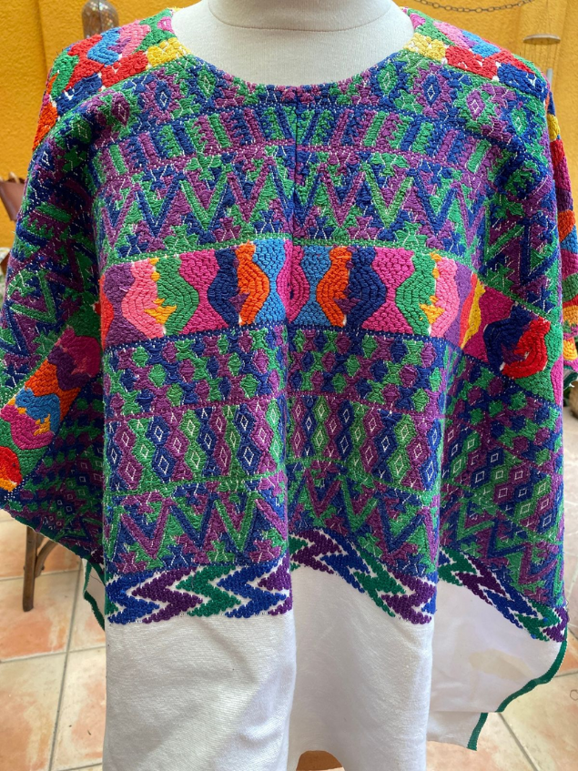
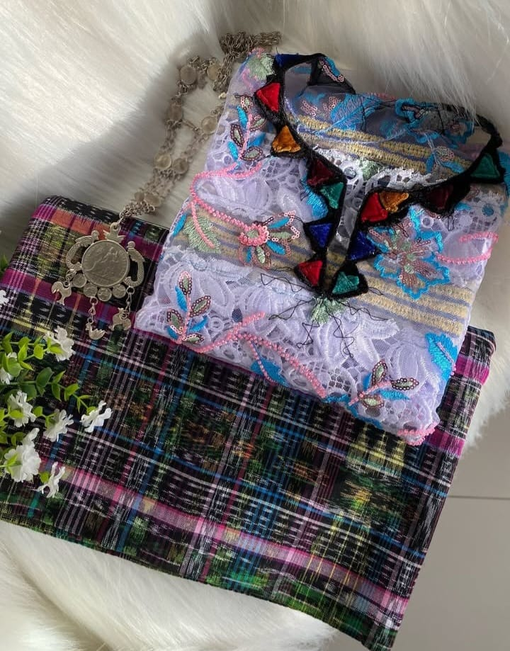
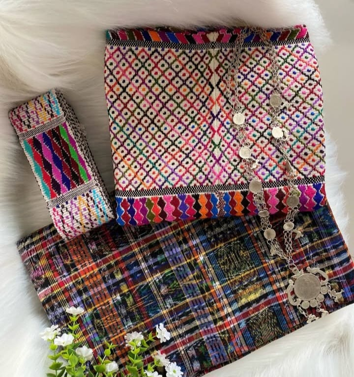

SOBRE NOSOTROS
Tejemos puentes entre la tradición y quienes la llevan puesta.
Textiles guatemaltecos, con su historia.


–
piezas
–
municipios
–
departamentos

NUESTRA HISTORIA
Cada traje cuenta la historia de su pueblo.



Lo que nos mueve
Origen claro
Hecho por artesanas
Piezas auténticas
Atención directa
Textiles de todo Guatemala
Comprar es así de fácil
-
1
Elige
tu prenda favorita
-
2
Escríbenos
por WhatsApp
-
3
Paga
como prefieras
-
4
Recíbela
en tu casa

Hecho a mano, con historia.
Fotos de paisajes: Wikimedia Commons.